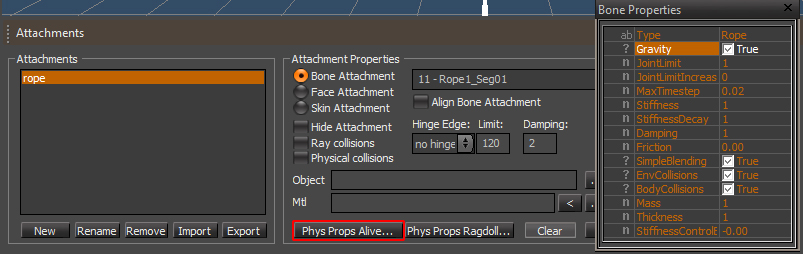

Обзор
Разделы
Веревки (или веревки персонажей) имеют много целей, но в основном используются для прикрепления к персонажу ткани, волос или веревок, чтобы объекты могли болтаться, трястись и реалистично деформироваться относительно игрока и других объектов.
Примеры файлов
- chr_rope.rar: этот пакет включает файлы примеров для Max и Maya, а также предварительно определенный файл .cdf.
Общая настройка
Единственное, что важно, — чтобы названия костей начинались со слова «веревка». Все, от слова «веревка» до следующего пробела, представляет собой имя веревки, которое следует ввести в свойствах редактора. Если в файле присутствует несколько веревок, они должны называться ropeXXX1/2/3 и т. д., чтобы скрипт мог перебирать их при настройке свойств.
- Кость должна быть названа следующим образом: «Веревка<номер> Сег<номер>».
- Сегменты одной ткани должны иметь одинаковый номер «Веревка».
- Сегментам одной и той же ткани следует присваивать имена последовательно, начиная с «Seg01» — самой первой кости, которая будет моделироваться.
- Иерархия суставов должна идти сверху вниз, как в обычной костной цепи.
- Последняя кость, моделируемая в каждой нити, никогда не должна быть последней костью в иерархии нитей. Всегда нужна завершающая кость. Завершающая кость по-прежнему должна соответствовать соглашению об именах, принятому для костей-цепочек (т. е. Rope1 Seg04 на рисунке выше является последней костью, смоделированной в первой нити. Конечная кость — это Rope1 Seg05. Следующая цепочка продолжается, начиная с кости Rope1 Seg06.
Для максимального количества пользователей: Индексируя имя цепочки, можно использовать несколько объектов цепочек/веревок в одном файле. Полезно нажать double и выбрать корневую кость цепочки (будут выбраны все дочерние элементы) и использовать инструмент переименования 3ds Max.
Для пользователей Maya: Обязательно сделайте многоугольник родителем корня веревки с назначенным ему прокси-сервером без материала для рисования и соблюдайте следующие соглашения об именах: Rope1_Seg01_physShape
Настройка в Sandbox
- Откройте персонажа, которого вы используете, в редакторе персонажей, добавьте новое вложение и установите этот ресурс как свою Рэгдолл.
- Для симуляции: нажмите «AI/PHYSICS» в нижней части экрана.
- Дальнейшую настройку следует выполнять с помощью файла .cdf, созданного на основе файла .chr. Это позволит провести глубокую настройку моделирования. Загрузите файл .chr в редактор символов и создайте новую привязку к кости, указав в качестве вложения корень веревки, затем выберите поле внизу с надписью "PhysPropsAlive..."

Свойства
Вот список того, что означают свойства на вкладке Rope Alive редактора персонажей:
- Гравитация — будет ли действовать гравитация поверх исходной позы (это означает, что при включении стабильная моделируемая поза веревки будет ниже целевой позы из анимации).
- 0 отключает гравитацию, значения больше 90 непрактичны.
- JointLimit - предел изгиба каждого сегмента в углах.
- JointLimitIncrease - насколько увеличивается JointLimit к концу (в долях от 1). Итак, если JointLimit равно 10, а JointLimitIncrease равно 0,8, предел будет равен 10 в основании и 18 в последнем сегменте.
- Умножьте JointLimit на 1+ эту переменную, чтобы получить предел в конце и посмотреть, имеет ли это смысл.
- MaxTimeStep — степень детализации временного шага. меньшие временные шаги дают более плавные результаты, но стоят дороже. Обычно для веревок не требуются какие-либо подшаги, поэтому вы можете установить большие значения, например 0,05 или даже 1 (если вы не используете очень жесткие веревки или веревки long).
0,01 для очень сложных веревок, 0,05 для простых. обычно не нужно превышать значение 1/частота кадров
- SimpleBlending — если включено, сопоставление целевой позы будет выполняться с использованием независимых линейных пружинных целей в каждой вершине веревки. В выключенном состоянии – за счет правильного применения угловых сил в суставах. Первый метод более управляем/предсказуем (особенно на более длинных верёвках), второй более реалистичен.
Обычно около 10 при сложном смешивании, может быть и 100 при простом, но в целом очень гибком.
- Жесткость – влияет на скорость, с которой веревка возвращается в целевую позу. 10 — хорошая отправная точка для настройки. более высокие значения могут поставить под угрозу стабильность моделирования (может потребоваться более низкое значение MaxTimeStep), хотя режим SimpleBlending менее подвержен этому. Обратите внимание, что 0 означает полностью анимированную веревку, чтобы сделать очень вялую веревку, используйте небольшое число, отличное от 0 (например, 0,01).
- StiffnessDecay — насколько уменьшается жесткость к концу веревки. 1 означает полный распад (100%), полностью вялый сегмент.
- Числа должны быть в шкале от 0 до 1.
- Демпфирование – гасит колебания веревки, создаваемые жесткостью. поэтому его следует настроить в сочетании с последним. Значение по умолчанию 1 является хорошей отправной точкой для корректировок. Лучше начать с состояния с недостаточным демпфированием и постепенно увеличивать его, поскольку симуляции с чрезмерным демпфированием труднее обнаружить, поэтому они могут выглядеть «нормально», но на самом деле быть довольно неоптимальными.
- 0-1 – слабый, 1-3 – средний, 3+ – сильный.
- Трение – трение скольжения в точках столкновения. 0 означает отсутствие трения, 1 — «несколько среднее».
Около 0,4 вполне подходит для персонажей, 2+ — очень липко.
- Масса - влияет только на то, какую скорость получает веревка от внешних импульсов (на более тяжелые веревки это влияет меньше).
- Достаточно всего, что не равно 0.
- Толщина - радиус веревки для симуляции. При включенных столкновениях лучше не использовать слишком толстые веревки (сохраняйте радиус не более 10% от длины отрезка - хотя это очень "мягкое" ограничение)
- StiffnessControlBone — если для него установлено целое число, отличное от 0, код будет масштабировать текущую жесткость и демпфирование с помощью вращения кости с именем «rope_stiffness_controller_N» (поворот на 100 углов = *1,0).
- BodyCollisions — включает коллизии со скелетом персонажа.
- EnvCollisions — включает столкновения с миром.
- HingeY,HingeZ - ограничивает вращение по оси Y или Z (не рекомендуется для веревок с мировыми столкновениями)